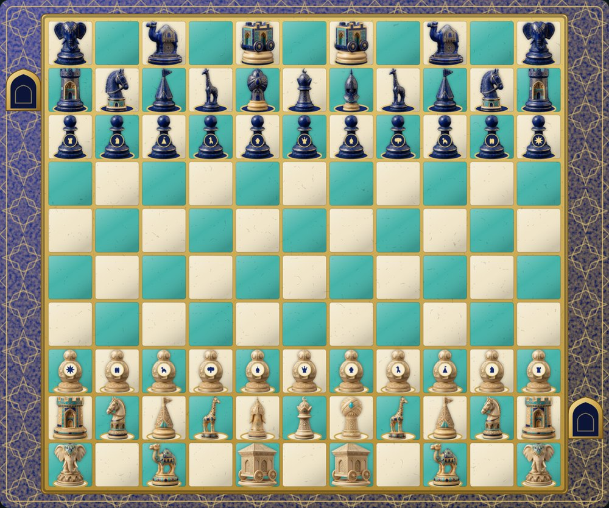

Rules

In short: mate the opponent's last king. The pieces move differently from modern chess, pawns promote only to their own piece, stalemate is a loss, and a king that reaches the enemy citadel saves a draw.
Board and citadels

The board has 11 files and 10 ranks, 110 squares. In the manuscripts it is unchequered; the chequering here is only a convenience and can be switched off in the menu. Two extra squares, the citadels (hisn), adjoin the board: one to the right of White's second rank, the other to the right of Blue's second rank, so each lies on its owner's right hand.
- Only a king may enter the opponent's citadel, and only the senior one present (shah, then prince, then adventitious king). The game is drawn at once. This is the losing side's escape.
- Only the adventitious king may enter his own citadel. He is immune there, and he blocks it against the enemy king.
- No other piece may ever enter a citadel.
Pieces
Each side has 28 men: a king, a general, a vizier, two each of rooks, knights, pickets, giraffes, elephants, camels and war engines, and 11 pawns. The Pieces section shows every move; during a game just tap any piece.
- The picket moves like the modern bishop, but at least two squares, and it does not jump.
- The giraffe goes one square diagonally and then at least three straight on. Anything in its path stops it. Both giraffes are shut in at the start.
- The elephant, war engine and camel jump: (2,2), (2,0) and (1,3).
- No castling, no pawn double step, no en passant.
Pawns
Every pawn belongs to a piece and, on reaching the last rank, becomes that piece only: the rook's pawn a rook, the giraffe's pawn a giraffe. Two pawns are special.
- The king's pawn becomes a prince, a second king.
- The pawn of pawns makes three journeys. On its first arrival it stays where it is and cannot be captured. Later its owner may spend a move to lift it to any square from which, as a pawn, it attacks two enemy pieces at once, or one piece that has no move; whatever stood on that square, of either colour (kings excepted), is removed. On its second arrival it is placed on the king's pawn's original square. On its third it becomes the adventitious king (shah masnu'a).
Several kings
While a side has more than one king, check and mate do not exist for it: any of its kings may be captured like an ordinary piece, and it may freely move into attack. When only one remains, he must be mated in the usual way.
The king's swap
Once per game a shah who is in check (and, following Murray, one who is stalemated) may change places with any of his own men, provided he is not attacked afterwards. A "King swap" button appears when this is possible.
How the game ends
- Checkmate of the last king wins.
- Stalemate also wins for the side that delivers it: the player with no move loses.
- A king in the opponent's citadel draws.
- A bare king has not lost: he may still reach the citadel.
- Threefold repetition and the 50-move rule are a modern addition so that games end; they can be switched off.
On disputed points
The manuscripts contradict one another and the one detailed source is incomplete. The default here follows H.J.R. Murray (A History of Chess, 1913), with clarifications from Hans Bodlaender and Jean-Louis Cazaux. Forbes' picket, the conditions for the swap, a bare-king rule and other readings can be chosen when you set up a game. Where every source is silent a rule has been supplied and is flagged as such: for instance, if the king's pawn square is occupied by a king, the pawn of pawns lands on the nearest free square of that rank.